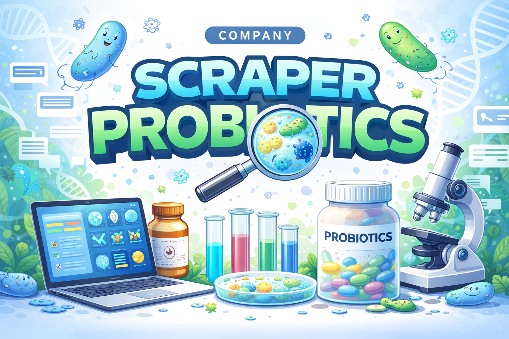
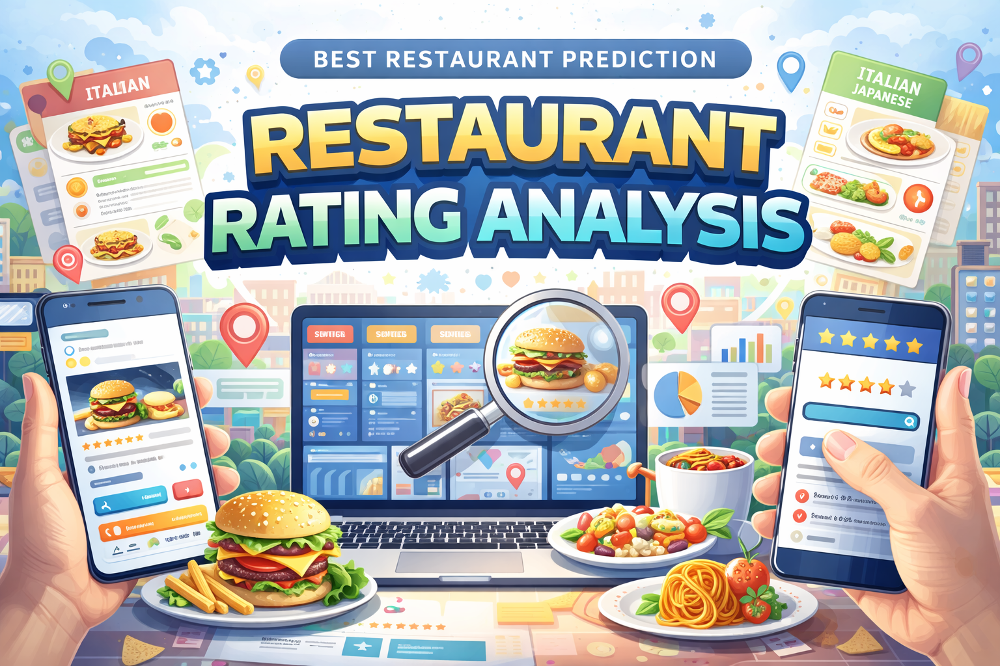
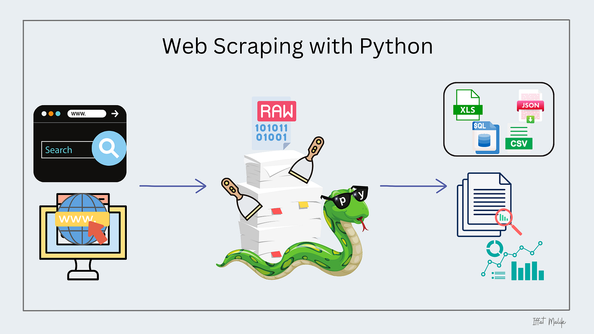
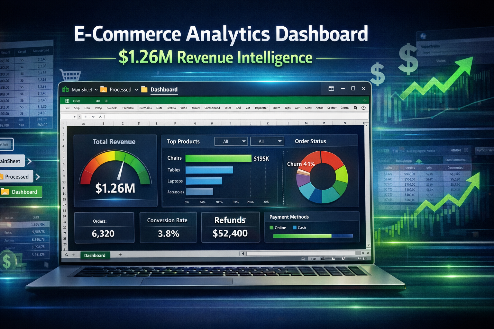

My Projects

Company Scraper Probiotics
Scraped and analyzed probiotics company data for market intelligence insights.
Read More

Restaurant Rating Analysis
Data Science model to Predict good Restaurant based on preferences.
Read More

WEB SCRAPER MODEL
Scraping and analyzing company data from websites for market intelligence and gets information .
Read More
Infra Vision Matcher
Developed InfraVision-Matcher, a computer vision pipeline that accurately aligns and converts RGB and thermal images using automated pairing and bilinear resizing for precise cross-modal analysis.
Read More

Excel E-Commerce Analytics
Developed Excel-based E-Commerce analytics dashboard and $1.26M Revenue Intelligence for tracking sales, inventory, and customer behavior.
Read More